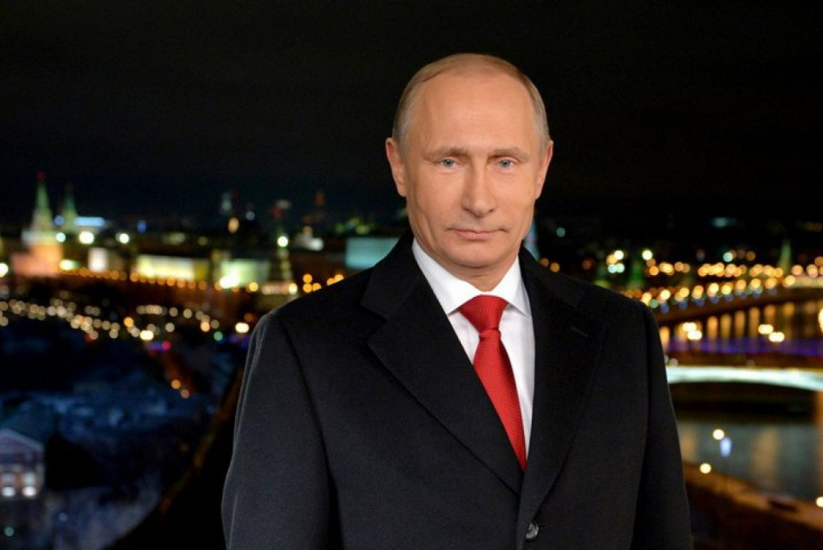

|  | VLADIMIR VLADIMIROVICH PUTIN |
|---|
Vladimir Putin ( 1952 yil 7-oktyabrda tug'ilgan , Leningrad , SSSR ) - rossiyalik davlat va siyosat arbobi , Rossiya Federatsiyasining amaldagi Prezidenti va 2012 yil 7-maydan beri Rossiya Federatsiyasi Qurolli Kuchlarining Oliy qo'mondoni. Ilgari u 1999 yil 31 dekabrdan 2008 yil 7 maygacha prezident bo'lib ishlagan, 1999-2000 va 2008-2012 yillarda Rossiya Federatsiyasi hukumati raisi bo'lib ishlagan.
Tamomlagan Qonuni fakultetini Leningrad Davlat universiteti (LSU). 1977 yildan beri u Leningrad KGB boshqarmasi tergov bo'limida qarshi razvedka liniyasida ishlagan. 1985 yildan 1990 yilgacha u Sovet Ittifoqi tashqi razvedkasining GDR- da istiqomat qilgan, Drezden shahrida SSSR va GDR o'rtasidagi Drezden do'stlik uyining direktori sifatida ishlagan. Leningradga qaytib kelgach, u Leningrad davlat universiteti rektorining xalqaro masalalar bo'yicha yordamchisi, keyin Leningrad shahar kengashi raisi Anatoliy Sobchakning maslahatchisi bo'lib ishlagan . 1991 yil 20 avgustda podpolkovnik unvoni bilan SSSR KGB tarkibidan iste'foga chiqdi.
1991-1996 yillarda u Sobchak rahbarligida Sankt-Peterburg meriyasiga ko'chib o'tishda davom etdi: tashqi aloqalar qo'mitasini boshqargan, merning maslahatchisi, keyinchalik birinchi o'rinbosari bo'lgan. 1996 yil avgustda u Moskvada Rossiya Federatsiyasi Prezidenti bosh ijrochi direktorining o'rinbosari sifatida ish boshladi . 1999 yil avgust oyida Rossiya Federatsiyasi Federal xavfsizlik xizmati boshlig'ida va Xavfsizlik Kengashi kotibi sifatida qisqa muddatli yashashdan so'ng u Bosh vazir etib tayinlandi.
U 1999 yil 31 dekabrda Rossiya Prezidenti Boris Yeltsinning qarori bilan Rossiya Federatsiyasi Prezidenti vazifasini bajaruvchi etib tayinlanganda - Rossiyaning birinchi Prezidenti iste'foga chiqishi munosabati bilan davlatning birinchi shaxsiga aylandi . Birinchi marta 2000 yil 26 martda Rossiyaning saylangan prezidenti . U 2004 , 2012 va 2018 yillarda davlat rahbari lavozimiga qayta saylangan . 2012 saylovlarda oldin, prezidentlik muddati edi oshdi 4 6 yilgacha.
Rossiya Federatsiyasi Konstitutsiyasiga kiritilgan o'zgartishlar kuchga kirgandan so'ng, u 2024 yil mart oyida bo'lib o'tadigan yangi prezident saylovlarida qatnashish huquqini oldi.
Zaxiradagi polkovnik (1999). Rossiya Federatsiyasi Davlat maslahatchisi vazifasini bajaruvchi, 1-sinf (1997). Iqtisod fanlari nomzodi (1997). Sambo bo'yicha sport ustasi (1973) va dzyudo (1975) , dzyudo bo'yicha Leningrad chempioni (1976), sambo bo'yicha Rossiyada xizmat ko'rsatgan murabbiy (1998). Nemis tilini yaxshi biladi .
1975 yilda Putin Leningrad davlat universitetining yuridik fakultetini tugatdi. Gubitsa artilleriyasi boshqaruvi vzvodi qo'mondoni sifatida u leytenant unvoniga sazovor bo'ldi. Tarqatishda u Davlat xavfsizlik qo'mitasiga ishga yuborildi. 1975 yilda SSSR KGB hududiy organlari tizimida kichik ofitser ( adliya katta leytenanti ) sertifikatiga ega bo'lgan Okta ("401-maktab") bo'yicha tezkor xodimlarni tayyorlash kurslarini tugatgan. 1977 yildan keyin u SSSR KGB-ning Leningrad va Leningrad viloyati bo'yicha boshqarmasi tergov bo'limida qarshi razvedka liniyasida ishlagan. Putinning ish joyi "deb nomlangan joyda joylashgan ediBig House " Liteiny prospektida , 4. 1979 yilda Putin Moskvadagi KGB aspiranturasida olti oylik malaka oshirish kursini tugatdi va Leningradga qaytdi.
1984 yilda adliya mayori unvoniga ega bo'lgan Putin KGB Qizil Bayroq institutining bir yillik fakultetiga o'qishga yuborildi va uni 1985 yilda "Tashqi razvedka" mutaxassisligi bo'yicha tugatdi. Putin qonuniy va noqonuniy razvedka ma'lumotlarini olgan . O'zining fikriga ko'ra, Qizil Bayroq institutida KGB fitna fitnasi Platovni oldi (chunki tinglovchilar bir-birlarining haqiqiy ismlarini bilishlari shart emas, taxalluslar hokimiyat tomonidan tanlangan). U o'quv bo'limining rahbari bo'lgan, nemis tilini o'rgangan. Sankt-Peterburgning Markaziy tarixiy va siyosiy hujjatlar arxivida saqlangan shaxsiy ishda aytilishicha, ish paytida Putin o'zini "ijro etuvchi, intizomli va vijdonli xodim" sifatida ko'rsatgan ....
1985-1990 yillarda Putin GDRda KGB tashqi razvedkasi tarkibida ishlagan . Uning rahbari Sharqiy Germaniyadagi Sovet razvedka guruhining rahbari, GDR Davlat Xavfsizlik vazirligi huzuridagi SSSR KGB vakili polkovnik Lazar Matveyev edi (2017 yil may oyida 90 yoshida sirini oshkor qildi). Putinning Drezdendagi hamkasblari, xususan, Sergey Chemezov va Nikolay Tokarev. Putin Stasi zobitlari uchun panel uylar kvartalidagi uch xonali kvartirada yashaganRadebergerstrasse 101-da KGB. U Drezdendagi hududiy razvedka idorasida SSSR va GDR o'rtasidagi Drezden do'stlik uyining direktori lavozimida ishlagan. Do'stlariga - o'zi 2018 yilda dedi Putin Sovet razvedka guruhi manfaatlarini soha, asosan G'arbiy Evropa mamlakatlari, jumladan, Amerika Qo'shma Shtatlari . Ushbu davlatlar, birinchi navbatda Germaniya Federativ Respublikasi, 1980-yillarning o'rtalariga kelib o'z hududlarida SSSRga qaratilgan o'rta va qisqa masofalarga mo'ljallangan raketalarni joylashtirdila.
Operatsion ishi davomida Putin har kuni o'zining oltinchi modelidagi "Jiguli" mashinasida yurishi kerak edi . Kattalar safari davomida Putin podpolkovnik va bo'lim boshlig'ining katta yordamchisi lavozimiga ko'tarildi. Berlin devori qulab tushganidan ko'p o'tmay , 1989 yil 5-dekabrda olmoniyalik namoyishchilar KGB arxivlarini tortib olish uchun Angelikastrasse ko'chasidagi 4-uydagi Sovet qarorgohiga bostirib kirmoqchi bo'lishdi, ammo Putin olomonni xizmat qurolini ishlatmasdan tarqalishga ishontirishga muvaffaq bo'ldi. Putin bekatning pechkasida katta miqdordagi maxfiy operativ hujjatlarni yoqib yubordi. 1990 yil yanvar oyida Putin GDRga ish safari tugab, Leningradga qaytdi.
1989 yilda u bronza medal bilan taqdirlandi "haq uchun" ning [ham] Germaniya Demokratik Milliy Xalq armiyasi.
Chet elga safari tugab, SSSRga qaytib kelgandan so'ng, Putinga ko'ra, u o'z xohishi bilan KGBning Moskvadagi tashqi razvedkasining markaziy apparatiga o'tishni rad etdi va Leningrad KGB Direktsiyasining birinchi bo'limi (SSSR hududidan razvedka) xodimlariga qaytdi. 1990 yilda Liteiny shahridagi binoda podpolkovnik Putin 643-sonli idorani egallab oldi. Xuddi shu oltinchi qavatda, keyingi ofisda, Sergey Ivanov , kelajakda Rossiya mudofaa vaziri, Prezident Putin ma'muriyati rahbari , ishlagan.
1991 yil 20 avgustda Leningrad meri Sobchak Favqulodda vaziyatlar davlat qo'mitasining buyruqlarini bajarishdan bosh tortganida , o'sha paytgacha Sobchak bilan bir yildan ko'proq vaqt davomida ishlagan Putin KGBdan iste'foga chiqish to'g'risida ariza